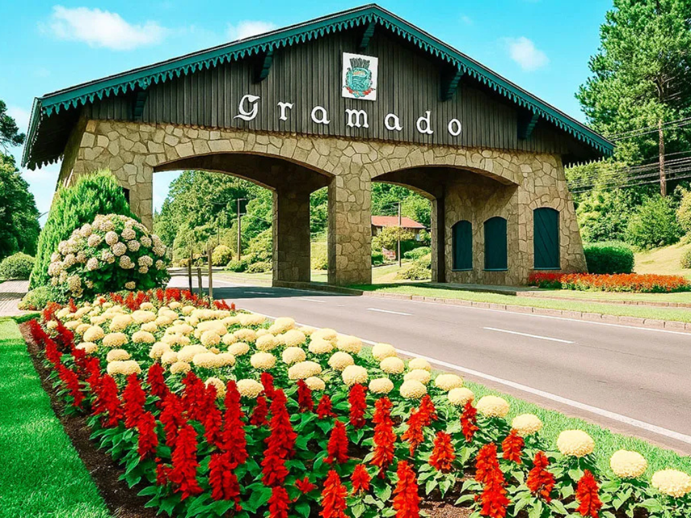

O Rio Grande do Sul é o estado mais ao sul do país, conhecido por sua forte identidade cultural, influenciada por tradições gaúchas e pela imigração europeia. Sua capital, Porto Alegre, é um importante centro político, econômico e cultural, enquanto cidades como Gramado e Caxias do Sul se destacam pelo turismo e pela indústria. O estado possui paisagens variadas, que vão dos pampas às serras, além de uma culinária marcante com o tradicional churrasco e o chimarrão. Sua economia é diversificada, com destaque para a agropecuária, a indústria e a produção de vinhos na região da Serra Gaúcha.
